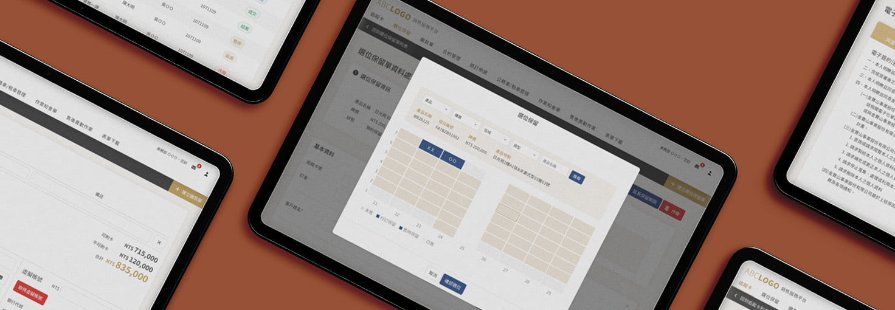

這個專案讓我印象很深，殯葬業長期依賴紙本和人工作業，在面對不熟悉的產業，幫助他們數位化之前，得先充分了解每個角色在做什麼、他們的習慣是什麼。這段時間陸續為金寶山設計了不同的平台，從面向家屬的預約服務、法會祭拜，到面向業務端的銷售服務管理到內部電子公文簽核流程，面對的使用者和情境都不一樣
其中最複雜的是銷售服務平台——這是一套給業務使用的客戶追蹤管理系統，從第一次接觸客戶，一路追蹤到選位、繳款、合約管理。對業務來說，它要取代過去大量的紙本流程；對家屬來說，它要讓最需要被照顧的時刻，每一步都能簡單完成
這個專案難在它的使用者很多元，紙本作業流程複雜，過往的習慣可能會造成資訊散落、更新慢、容易出錯。所以需要在不打亂既有的習慣前提下，想辦法讓數位化可以無縫接軌

不同裝置、不同情境，都能順利操作
把每個客戶想成一張追蹤卡，業務不用自己記客戶走到哪一步，系統會依據狀態自動分類。進展到不同階段，相關單據也會自動帶入先前的資料，資訊不用重複輸入，行政負擔少很多
墓園空間很大、分區複雜，我把它拆解成層級式的篩選，再搭配視覺化劃位地圖，用顏色回饋每個位置的狀態（已售/保留/空位）。第一線人員現場就能帶客戶看圖、當場劃位，不用再打電話詢問後台
合約簽署是家屬壓力很大的環節，所以特別針對現場 iPad 操作的情境去重新設計這個單元的流程—把冗長的合約拆成 4–5 個引導式步驟，讓家屬可以逐段確認條文，再直接在平板上數位簽名。目標是讓整個過程感覺透明、不倉促
高齡化友善設計—考量到這個產業使用者有不少高齡族群，所以從一開始就把無障礙的概念帶進去——高對比色、放大字體、直覺的按鈕配置，複雜欄位用漸進式揭露處理，不讓人一進來就被資訊量嚇到
讓系統從「記錄工具」變成「管理工具」－現在的系統主要是紀錄和追蹤，但如果重來，會想把儀表板做得更主動一點——加入提示機制、個人化的業務分析，讓業務不只是用系統查資料，而是能從系統裡看出下一步怎麼做
在關鍵節點加入情緒設計－這個系統的資料量很龐大，操作壓力其實不小。會想在重要的完成節點加入正向回饋，搭配明確的進度提示，讓使用者清楚知道自己走到哪了，減少不確定帶來的焦慮感